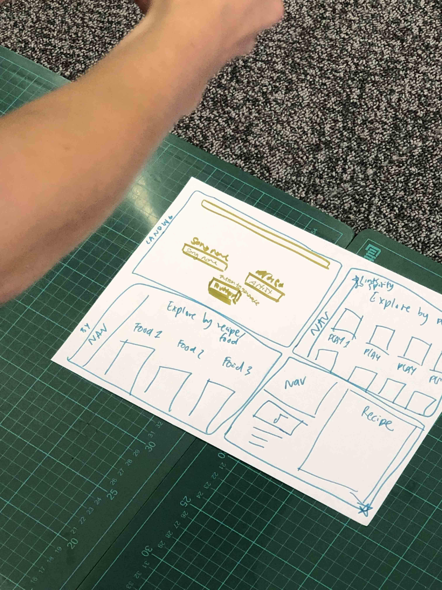
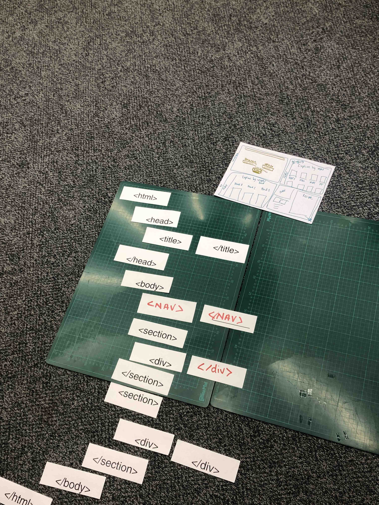

schultzschultz studio ALLES NEU! "For a typography exhibition at the Museum for Applied Art Frankfurt we created a series of video clips of letterforms being manipulated by multiple and custom built devices."schultzschultz studio ALLES NEU! "For a typography exhibition at the Museum for Applied Art Frankfurt we created a series of video clips of letterforms being manipulated by multiple and custom built devices."schultzschultz studio ALLES NEU! "For a typography exhibition at the Museum for Applied Art Frankfurt we created a series of video clips of letterforms being manipulated by multiple and custom built devices."schultzschultz studio ALLES NEU! "For a typography exhibition at the Museum for Applied Art Frankfurt we created a series of video clips of letterforms being manipulated by multiple and custom built devices."


BMW's innovative interaction functions, linked to various feature you can adjust while you drive.